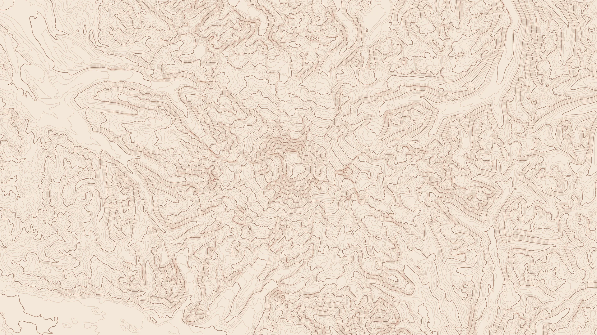
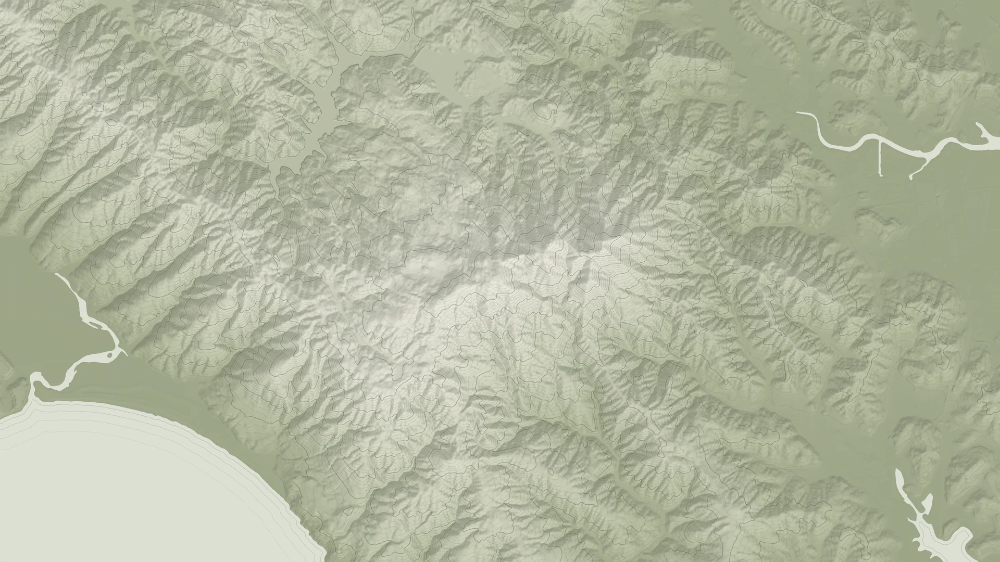
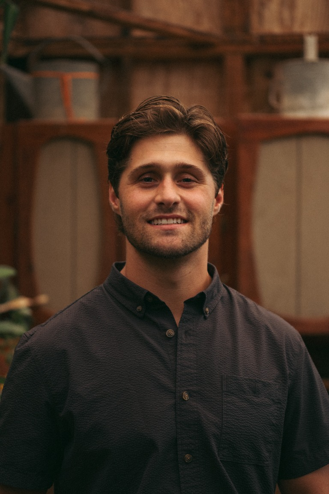

PLACEHOLDER

GIS · SPATIAL ANALYSIS · CARTOGRAPHY
Hey, I'm Logan — an environmental scientist and consultant, and a UCLA master's candidate in San Diego. I'm interested in using spatial analysis to explore environmental questions and better understand how people and places shape one another.
PLACEHOLDER



LOGAN BOWDISHENVIRONMENTAL CONSULTANT · FIELD SCIENTIST · SPATIAL ANALYSTGIS PROFESSIONAL · UCLA MASTER'S CANDIDATE
I'm Logan Bowdish, Lead GIS Analyst / Associate Scientist, with 4+ years delivering GIS for water-resources and environmental programs. I lead projects for the California State Water Resources Control Board, San Diego County, the City of Vista, and other municipalities—from field-ready mobile apps and standardized infrastructure databases to spatial analysis, QA/QC, maps, and web deliverables.
My environmental science and botany training, field monitoring, and FAA Part 107 aerial-imagery work keep my GIS grounded in how data are collected and used. I bring stormwater (NPDES, MS4, illicit discharge detection), flow and water-quality monitoring, and TMDL expertise to my master's studies at UCLA. I'm especially interested in large spatial models (LSMs) and automated geospatial workflows that make spatial analysis more scalable, reproducible, and useful for decision-making. I hold UCSD Extension's GISP certification (2026); my GISP designation is expected in December 2026. I also coauthored a 2023 paper on mycorrhizal fungi, soil factors, and toxic-element uptake in urban-grown produce.
QUESTIONS · PROJECT IDEAS · COLLABORATION
Have a question about my work, a cool project idea, or want to collaborate? Find me on LinkedIn and send me a message. I'd love to hear from you.
Connect on LinkedIn